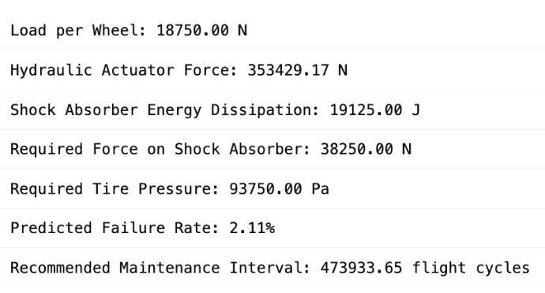

Load Distribution and Actuator Design
Using aircraft mass and impact load factors, the program computes how weight is distributed across wheels during landing. The hydraulic actuator force is then calculated based on pressure and piston area using Pascal’s Law.
Energy absorption is modeled through kinetic energy dissipation during vertical touchdown, accounting for shock absorber efficiency and stroke length. The result is an estimate of energy absorbed and force requirements for optimal damping.
Failure Rate Analysis
A Monte Carlo simulation models potential failure across thousands of landing cycles. This process reveals how minor variations in component reliability can dramatically affect total system risk, supporting robust maintenance scheduling.
The graph visualizes simulated failure rates across increasing component failure probabilities, offering engineers a tool for proactive reliability analysis and flight safety management.